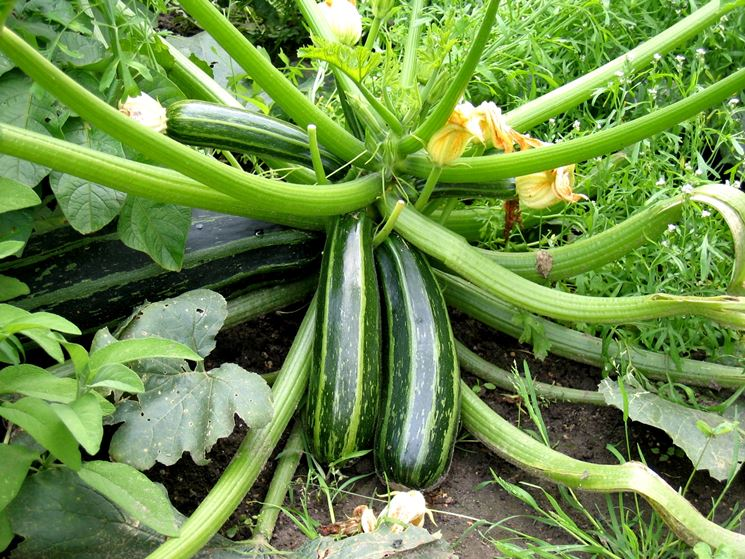
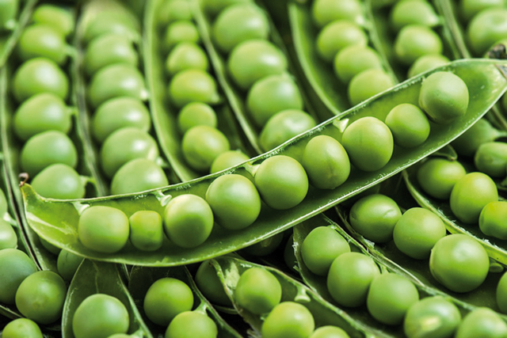

Zucchine
Coltivare in terreno molto ricco di materia organica e non coltivare dopo solanacee o piante della stessa famiglia delle cucurbitacee.
- Varietà: Zucchina chiara di Faenza
- Periodo di semina: Marzo/Aprile
- Primo raccolto: Fine aprile
- Ultimo raccolto: Fine luglio
-
Raccolto:
Dimensione Quantità Piccole(10cm) 16 Medie(11-16cm) 26 Grandi(>16) 9 51
Piselli
American Wonder varietà media precoce come ciclo colturale.
-
Piantare in semenzaio riscaldato.
E' importante:- Acquistare vasetti biodegradabili (di cocco o cartone)
-
Mantenere areato il semenzaio per evitare muffe
- Non usare il coperchio del semenzaio
- non mettere il semenzaio vicino al termosifone
- Fissare i sostegni nel terrenono appena le piante raggiungono i 10 cm
- Acquistare una rete con spazi di non più di 10cm per garantire sostegni adeguati